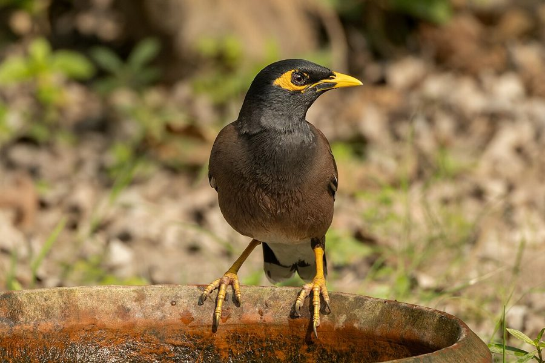

मैनाCommon Myna
Acridotheres tristis · Sturnidae · BRD-0006

- Scientific name
- Acridotheres tristis (Linnaeus, 1766)
- Family
- Sturnidae
- Hindi
- मैना / मैना पक्षी
- Status here
- native
- IUCN
- LC
When to look कब देखें
Present all year.
मैना / Common Myna
Acridotheres tristis (Linnaeus, 1766) — Sturnidae
मैना — अगर पूर्वी यूपी के गाँवों को सबसे अच्छे से जानने वाला एक पक्षी चुनना हो, तो वह मैना होगी। हमारा फेंका हुआ खाना खाती है, दीवारों में घोंसला बनाती है, मवेशियों के पीछे चलती है, और बाज़ार देखती है। यह प्रेम और साथ का प्रतीक मानी जाती है क्योंकि इसके जोड़े हमेशा साथ रहते हैं।
हिंदी परिचय Hindi Overview
मैना (Acridotheres tristis) भारतीय उपमहाद्वीप की सबसे आम चिड़िया है। पूर्वी उत्तर प्रदेश में हर गाँव, हर बाज़ार, और हर खेत में मिलती है। यह एक सिनैन्थ्रोप (synanthrope) है — यानी ऐसी प्रजाति जो इंसान के साथ रहकर फलती-फूलती है।
मैना की एक ख़ास बात है — यह जोड़े में रहती है। मैना के जोड़े साल भर साथ रहते हैं — प्रजनन के मौसम के बाद भी। इसीलिए हिंदी में "मैना" प्रेम और साथ का प्रतीक बन गई है।
एक दूसरा पहलू — मैना को IUCN ने "विश्व की 100 सबसे हानिकारक आक्रामक प्रजातियों" में शामिल किया है। लेकिन यह केवल उन जगहों के लिए है जहाँ इसे इंसान ने पहुँचाया — जैसे ऑस्ट्रेलिया, न्यूजीलैंड। भारत में मैना देशी (native) है — यहाँ की पारिस्थितिक व्यवस्था का हिस्सा है।
Quick Identification त्वरित पहचान
| Feature | Description |
|---|---|
| Size | Medium-sized starling (23–26 cm total length); stocky build |
| Plumage | Brown body, glossy black hood (head and neck); white patches on wings |
| Bare parts | Bright yellow bill and legs; prominent bare yellow skin patch behind and around the eye |
| In flight | Conspicuous white wing flash covering about one-third of the wing |
| Post-ocular skin | Bare yellow patch, diagnostic at a glance |
| Behaviour | Walks confidently on the ground (doesn't hop); head tilted, alert; highly vocal |
Field tip: A stocky brown and black bird with a bright yellow bill and yellow skin patch around the eye, walking boldly in fields or village streets. In flight, it reveals large, brilliant white wing patches.
Morphology आकारिकी
Biometrics (nominate tristis, northern India — the form in eastern UP):
| Measurement | Range |
|---|---|
| Total length | 230–260 mm |
| Wing (flattened chord) | 134–145 mm |
| Tail | 80–92 mm |
| Tarsus | 35–42 mm |
| Bill (culmen from base) | 25–30 mm |
| Weight | 110–135 g |
Plumage: Head and neck glossy black. Back and wing coverts brown. Primaries and tail black. Large white wing patch (white on 6–7 primary bases) — visible as a rectangular white patch on the folded wing; in flight creates a conspicuous white flash. Underparts brown-ochre; vent and undertail coverts white.
Face: Bare yellow skin patch extending from behind the bill, around the eye, and behind the eye (post-ocular wattle). Bill entirely yellow. Eye yellowish.
Legs: Yellow.
Sexes: Similar; males slightly larger on average, but not reliably distinguishable in the field.
Juveniles: Duller; brown where adults are black; yellow facial skin less vivid.
Vocalisations
The Common Myna has an extremely loud, harsh, and varied repertoire of calls, including chuckles, squawks, chirps, clicks, squeaks, and whistles.
- Contact and advertisement call: A loud, repeated keek-keek-keek or chattering series used to maintain pair-bond or advertise presence.
- Song: A mixture of liquid gurgles, harsh churs, and melodic notes delivered from a perch.
- Alarm call: A sharp, grating screech when predators are sighted. It also mimics other birds and human-made sounds.
Ecological Role पारिस्थितिक भूमिका
Omnivore of the highest order: Myna eats almost everything — insects, earthworms, fruit, grain, kitchen scraps, carrion, small lizards, nestlings of smaller birds. This flexibility is the key to its success.
Following cattle: One of the most visible behaviours in eastern UP is mynas walking behind grazing cattle or buffalo, picking up grasshoppers and other insects disturbed by the animal's feet. This is a commensal relationship (myna benefits, cattle are unaffected).
Agriculture: Mynas consume significant quantities of invertebrate pests (grasshoppers, caterpillars, armyworms) in paddy and vegetable fields. They also damage ripe mango, guava, and papaya — pecking holes that then attract other feeders. The net effect on crop production is debated but probably slightly positive for most crops.
Nest hole competition: Mynas nest in cavities — tree holes, wall gaps, eaves, and drain pipes. They actively displace smaller birds (sunbirds, sparrows, bee-eaters) from nest holes and sometimes destroy their eggs. This makes them a conservation concern for hole-nesting specialists.
Seed dispersal: Figs, berries, and small fruits are eaten and seeds deposited elsewhere. Less efficient a disperser than fruit bats or hornbills, but important at the village scale.
Roosting: Mynas gather in large communal roosts at dusk — often thousands of birds in a single neem or banyan tree. The spectacle is extraordinary; the noise and droppings less so.
Life Cycle / Phenology जीवन चक्र
- Breeding season: March–August; peak April–June; two broods common
- Nest: Untidy collection of grass, feathers, paper, plastic, roots — stuffed into any cavity (tree hole, wall gap, pipe, eave); does not build a structured nest
- Eggs: 4–6, pale blue-green
- Incubation: ~13 days; both parents incubate
- Fledging: ~22 days; fledglings follow parents for 2–3 weeks
- Year-round: Resident; non-migratory in eastern UP; the same pairs hold territories year-round
Host Plants or Prey आहार
Primary prey and diet:
- Armyworms, caterpillars, and grasshoppers in agricultural fields
- Termites and winged ants during emergence flights
- Ripe fruits including mango (Mangifera indica), guava, and papaya
- Seeds of various grasses and crops (paddy, wheat)
- Kitchen scraps and household organic waste
Predators / Natural Enemies शत्रु
- Shikra (Accipiter badius) — primary aerial predator of adults and fledglings
- Black Kite (Milvus migrans) — opportunistically preys on juveniles or raids nests
- House Crow (Corvus splendens) — raids nests for eggs and nestlings
- Feral cats and mongooses — hunt birds foraging on the ground
Agricultural / Human Relevance कृषि और मानव संबंध
Pest control: Mynas consume large numbers of armyworms, grasshoppers, caterpillars, and cutworms — all agricultural pests. Following tractors during ploughing to catch exposed soil invertebrates.
Fruit damage: Pecks at soft fruits (mango, guava, papaya, lychee) — causes economic loss to orchard farmers. Holes made by mynas are then used by other species (starlings, bulbuls).
Cultural significance:
- Myna (मैना) has been a beloved cage bird across South Asia for centuries — kept for its mimicry ability and its pair-bonding. Keeping native birds as pets is now illegal in India under Wildlife Protection Act 1972.
- "मैना ने कहा" — the talking myna is a stock character in Indian folk tales and children's stories.
- Pair loyalty of mynas is cited in Hindi poetry as a metaphor for faithful love.
Expected Locally स्थानीय रूप से अपेक्षित
Not a field record. Written from published accounts for eastern Uttar Pradesh. No confirmed local sighting yet — if you have seen it, that is what the atlas needs.
अभी तक स्थानीय पुष्टि नहीं। यह विवरण प्रकाशित स्रोतों से है, किसी अवलोकन से नहीं।
Extremely common and easily observed in Basti district year-round. They walk in pairs or small groups through home gardens, roadsides, and cultivated fields. They are highly habituated to human presence and are regular visitors to village houses. Large communal roosts are active in mature Peepal and Banyan trees near markets.
Distribution वितरण
Global range: Widespread native range across South Asia, from Afghanistan through Pakistan, India, Nepal, Bhutan, Bangladesh, and Myanmar; widely introduced and invasive in South Africa, Australia, New Zealand, North America, and many oceanic islands.
In India: Found throughout the entire country from the plains up to about 3,000 m in the Himalayas, excluding extremely dense forest tracts.
In Uttar Pradesh: Abundant year-round resident across all urban, semi-urban, and agricultural regions.
In Basti district / eastern UP: Extremely common resident bird; observed in every village, town, market, cropland, and roadside.
Range notes: No significant range changes documented.
Research Questions शोध प्रश्न
Anyone can investigate these | कोई भी इन प्रश्नों की जाँच कर सकता है
- How many mynas roost in the largest roost tree in your village? / आपके गाँव के सबसे बड़े बसेरे में कितनी मैनाएँ हैं? — Count at dusk as birds arrive. Repeat monthly — does roost size change seasonally?
- Do mynas in your village follow cattle? / आपके गाँव की मैनाएँ मवेशियों के पीछे चलती हैं? — Watch a grazing buffalo for 30 minutes; record how many mynas follow and what they catch.
- Which nest holes do mynas use in your village? / मैना किन-किन जगहों पर घोंसला बनाती है? — Map all nesting sites: tree holes, wall gaps, drain pipes, eaves.
- Are mynas and house sparrows competing for the same holes? / मैना और गौरैया एक ही छेद के लिए लड़ते हैं? — Watch a contested hole for 30 minutes; record the outcome.
- What do mynas eat in different seasons? / मैना अलग-अलग मौसम में क्या खाती है? — Keep a foraging journal: record what mynas are eating each week. Do they switch from insects to fruit after monsoon?
Similar Species मिलती-जुलती प्रजातियाँ
| Species | How to tell apart | हिंदी |
|---|---|---|
| Jungle Myna (Acridotheres fuscus) | Grey bare facial skin (not yellow); tuft of feathers at bill base; less common in villages | जंगल मैना — भूरी चमड़ी |
| Bank Myna (Acridotheres ginginianus) | Orange-red facial skin; black ear patch; prefers river banks | नदी मैना — नारंगी चमड़ी |
| Brahminy Starling (Sturnia pagodarum) | Rusty-orange underparts; grey-white head; black cap; slimmer | पहाड़ी मैना / ब्राह्मणी मैना |
| Common Starling (Sturnus vulgaris) | Speckled iridescent plumage; short tail; pointed bill; winter visitor | तारा मैना — सर्दियों का आगंतुक |
Field rule: Brown-and-black bird with yellow bill + large yellow bare eye-patch + white wing flash + yellow legs + confident walking gait = Common Myna. No other common eastern UP bird has the yellow eye-patch + white wing combination.
Taxonomy & Classification वर्गीकरण
Original description. Acridotheres tristis was described as Paradisea tristis by Carl Linnaeus in 1766 in his work Systema Naturae, Editio Duodecima (p. 167). Type locality: "Philippines" (erroneous; restricted to Pondicherry, India by Hartert in 1910). The genus name Acridotheres is derived from the Greek akris (locust) and theres (hunter), referring to its insect-eating habit. The species name tristis means sad or dull-coloured in Latin.
Subspecies. Two subspecies are currently recognised:
| Subspecies | Authority | Range | Notes |
|---|---|---|---|
| A. t. tristis | (Linnaeus, 1766) | Southern Asia (Afghanistan to Indochina) | UP subspecies; nominate form, widespread |
| A. t. melanosternus | Legge, 1879 | Sri Lanka | Darker plumage, blacker cheek patch |
Family and order placement. This species belongs to the order Passeriformes and family Sturnidae (starlings and mynas). Sturnidae is a species-rich family of Old World passerines containing ~120 species. The genus Acridotheres contains ~10 species of typical mynas distributed primarily in Asia.
Phylogenetic notes. Molecular phylogenetic studies (such as Lovette & Rubenstein, 2007) show that Acridotheres is a monophyletic genus closely related to Sturnia (Brahminy Starling).
IUCN status rationale. Assessed as Least Concern (LC). The species has an extremely large geographic range and a growing global population. It benefits greatly from human habitat alteration and urbanization.
Photo Gallery फोटो गैलरी
Note: Add field photos tomedia/species/common_myna/
फोटो निर्देश: पास से बैठी हुई (पीली आँख और पीली चोंच दिखाते हुए), उड़ते समय (सफेद पंख धब्बा), मवेशी के पीछे, और शाम को बसेरे में।
Photos needed आवश्यक फोटो
- [ ] Perched close-up showing yellow eye patch and bill (पीली आँख + पीली चोंच)
- [ ] In flight showing white wing patch (उड़ते समय सफेद धब्बा)
- [ ] Following cattle in a field (मवेशी के पीछे)
- [ ] Communal roost at dusk (शाम को बसेरा)
- [ ] At nest hole (घोंसले के छेद पर)
Atlas Connections संबंधित प्रजातियाँ
- Peepal — primary communal roost tree; thousands may gather at dusk (FLR-0006)
- Neem — secondary roost tree; also forages on neem fruit (FLR-0009)
- Mango — feeds on ripe mango; pecks damage allows other species access (FLR-0011)
- House Sparrow — nest-hole competitor; sparrow populations have declined where myna pressure increased (BRD-0007)
- Paddy — follows harvest operations; eats grain and exposed soil insects (FLR-0014)
- Indian Flying Fox — shares roost tree canopy at peepal (MAM-0001)
- Black Drongo — both are insectivores that follow agricultural disturbance; sometimes in the same field (BRD-0005)
References संदर्भ
- Linnaeus, C. (1766). Systema Naturae per regna tria naturae. Editio Duodecima, Reformata. Laurentii Salvii, Holmiae, p. 167. [original description]
- Ali, S. & Ripley, S.D. (1987). Handbook of the Birds of India and Pakistan. Vol. 5. Oxford University Press, New Delhi.
- Grimmett, R., Inskipp, C. & Inskipp, T. (2011). Birds of the Indian Subcontinent. 2nd ed. Christopher Helm, London.
- Rasmussen, P.C. & Anderton, J.C. (2005). Birds of South Asia: The Ripley Guide. Smithsonian Institution, Washington.
- Dhindsa, M.S. & Toor, H.S. (1981). The ecology of Common Myna in croplands. Journal of the Bombay Natural History Society, 78, 245–260.
- BirdLife International (2024). Acridotheres tristis. IUCN Red List of Threatened Species. Ver. 2024.
- GBIF Occurrence Data — Acridotheres tristis, Uttar Pradesh (2010–2025).
Source file: species/fauna/birds/common_myna.md